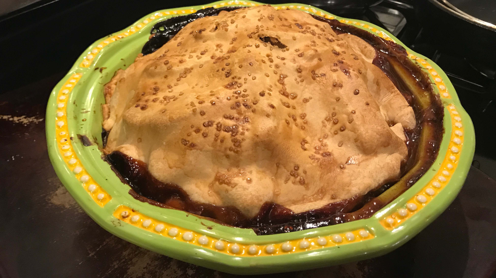

Now, my mom would be very upset if she knew I was sharing this recipe, so let's keep it just between us! This is my great grandmother's lemon meringue pie, which means the recipe is simple and kind of vague. But it's truly unlike any other lemon meringue pie I've ever had and a staple at family events during the summer. Sweet, tart, and refreshing!
Photo by Charles Deluvio on Unsplash
As I said before, my great grandmother's recipe is kind of vague. I tried to add as much detail as I could to this version. But that's the way all of her recipes were, or at least the ones she chose to write down. My mom says that I'm the only person in the family that has ever come close to cooking like her, and I take that as a major compliment. So with that in mind, I feel like I have some justification to give you these tips.
Never use lemon juice out of the bottle! It's always, always better with the fresh stuff.
Six lemons is an estimate of how many you will need. We always just buy the pre-bagged bunches and it seems to be enough. If you are scant a couple of tablespoons, go ahead and supplement with some bottled lemon juice.
The meringue is the hardest part. I've never gotten the texture quite right, but it always still tastes great! So if yours looks a little strange, just go with it!
Lastly, I suggest peeking at the pie in the oven every couple of minutes. My great grandmother didn't specify a time, so we are always left sitting in front of the oven with the light on inside making sure it doesn't overcook.
You can also make this pie with a regular frozen pie crust. Just make sure to parbake your crust first.
This apple pie is by far the best I've ever had. It's a labor of love, but totally worth every second spent making it! It is a recipe by Claire Safitz with a few of my own tweaks included.
Photo by my friend, Jen
Having made this pie a few times, I've come up with a few tips that might help you along the way.
First, Pink Lady apples are the best for this pie. They have a flavor profile that pairs incredibly with the spices in this recipe. If you can't find Pink Ladies, Granny Smith, Honeycrisp, and Stayman apples are all good substitutes.
Always use a vanilla bean, not extract. You just can't duplicate that flavor!
If your dough starts getting too warm during the assembly, stick the pie in the freezer for a few minutes. The heat from the apple cider reduction can make this part tricky.
During baking, if you think the crust is getting too dark, place some foil over the pie. This will prevent burning.
I always make this a double recipe and make two pies. When doing this, you still only need 1 vanilla bead (although I still sometimes use 2) and 1 egg, and you don't have to buy any extra dough since most pie shells and pie dough rounds come in doubles.
For years my mom had me fooled... I thought she was a recipe genius and was the creator of this pumpkin pie. Little did I know she was totally just going by the recipe on the back of the Libby's Pumpkin can. So here is my mom's (Libby's) Famous Pumpkin Pie.
There aren't many tips for this recipe as we stay pretty true to the original. The only thing we've picked up on over the years is that this double recipe makes more than can fit in two deep dish pie shells. So we now also buy a regular pie shell and bake it on the rack underneath the two deep dish pies.
Always serve with a generous portion of fresh whipped cream!
The absolute best pecan pie in the world is Cracker Barrel's Chocolate Pecan Pie. I know that's a very bold statement, and I wish it weren't true, but this is the reality we all must face! Sadly, the other reality I must face is that I grew up in the middle of nowhere. There was nary a Cracker Barrel in sight, so my family had to get crafty.
For the past almost decade, we have been using this recipe by Stephanie Manley to recreate the magic of Cracker Barrel's pie and it's a major hit! The only requirement is you must serve the pie with lots of vanilla ice cream!